Una fuerza aplicada a un cuerpo realiza trabajo cuando produce un desplazamiento o deformación de dicho cuerpo. Si la dirección de aplicación de la fuerza y la dirección del desplazamiento no coinciden, solo la componente de la fuerza en la dirección del desplazamiento realiza trabajo.
Denominando W al trabajo, F a la fuerza, s al desplazamiento y φ al ángulo que forman las direcciones de ambos, la expresión del trabajo será:
\[W= F\cdot s\cdot \cos\varphi \]
En términos vectoriales, se puede definir el trabajo como el producto escalar de los vectores fuerza y desplazamiento:
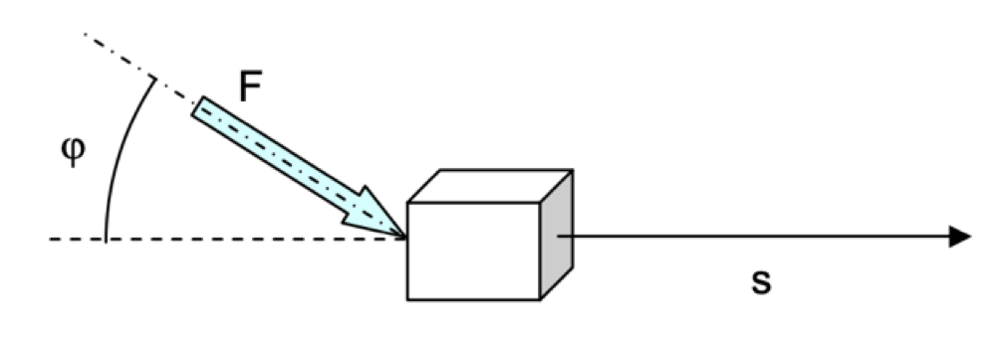
\[W=\vec{F}\cdot \vec{s}= F\cdot s\cdot \cos\varphi \]
Cuando el cos φ es positivo, el trabajo se denomina trabajo motor; cuando es negativo, el trabajo se denomina trabajo resistente (por ejemplo, una fuerza que frena el movimiento de un cuerpo).
Nota: hemos de observar que la idea de trabajo con que nos expresamos en el lenguaje cotidiano no coincide con la definición científica. Así, cuando elevamos un cuerpo con la mano, realizamos trabajo, sin embargo, cuando solo lo sostenemos en el aire, no estamos realizando trabajo, por mucho esfuerzo que estemos haciendo.
Ejercicio 1: Un camión de mudanzas emplea un sistema de rampa, carrito y cable para subir los enseres pesados a la caja. Las dimensiones finales se dan en la figura. Con estos datos, suponiendo que se pueden despreciar los rozamientos, calcula el trabajo que se realiza para subir hasta la caja un mueble de 120 kg de masa. Verifica la solución para otras combinaciones de dimensiones de la plataforma, incluso subiendo en vertical sin plataforma. ¿A qué conclusión se llega?
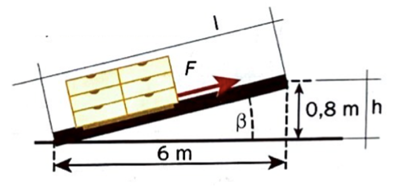
Trabajo realizado por una fuerza variable
Hasta ahora hemos supuesto que la fuerza que produce el trabajo era constante y la trayectoria seguida por el móvil era rectilínea. Sin embargo, en muchos casos esto no es así como, por ejemplo, en un motor de explosión. En general, la fuerza puede ir variando tanto su módulo como su dirección, al igual que el desplazamiento.
En estos casos, consideramos el desplazamiento total dividido en un gran número de pequeños desplazamientos elementales (\(d\vec{s}\)) que se suponen rectilíneos y que, al ser tan pequeños, en ellos la fuerza se mantiene constante. El trabajo elemental realizado en dichos desplazamientos será́ entonces el que se obtiene del producto escalar de \(\vec{F}\) y \(d\vec{s}\):
\[dW=\vec{F}\cdot d\vec{s}\]
El trabajo total correspondiente al desplazamiento entre una posición inicial A y una posición final B, vendrá́ dado por la suma de todos los trabajos de cada desplazamiento elemental en que hayamos dividido el camino entre A y B. Como tenemos que sumar un número infinito de valores, el sumatorio será en realidad una integral:
\[W=\int_{A}^{B}dW=\int_{A}^{B}\vec{F}\cdot d\vec{s}\]
Fuerzas conservativas y no conservativas
Cuando el trabajo realizado por una fuerza para desplazar una partícula entre dos puntos no depende del camino seguido se dice que es una fuerza conservativa. Son fuerzas conservativas las gravitatorias, las fuerzas elásticas y las fuerzas electrostáticas.
Cuando el trabajo realizado sí depende de la trayectoria seguida entre el punto inicial y final, se dice que es una fuerza no conservativa. Son fuerzas no conservativas las de rozamiento o las fuerzas magnéticas.
Representación gráfica del trabajo
Podemos visualizar gráficamente la magnitud trabajo si representamos en un diagrama cartesiano la fuerza en relación con el espacio recorrido.
El trabajo sería igual al área de la figura limitada por la curva que representa a la fuerza, el eje del espacio y las abscisas correspondientes a los puntos inicial y final. Vemos ejemplos de algunos casos:
Fuerza variable y trayectoria no rectilínea
Este sería el caso más general que podríamos encontrarnos. Tendríamos que representar una curva para cada componente de la fuerza frente a su coordenada correspondiente (Fx frente a x, Fy frente a y y Fz frente a z) Cada una de estas curvas tendría un aspecto de este estilo:
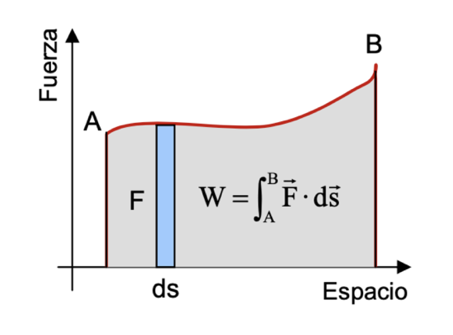
Y el trabajo sería el área gris de la figura. Para calcularlo, habría que resolver la integral.
Fuerza que varia linealmente con la distancia y trayectoria rectilínea
Este sería el caso de un muelle de constante elástica k (la fuerza es proporcional a la distancia, F = k·x). En este caso la gráfica es así:
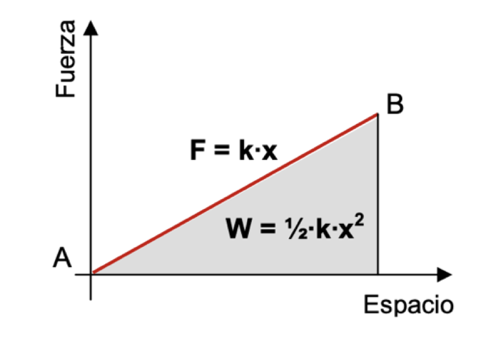
Como el trabajo es el área, ahora no necesitamos resolver ninguna integral porque sabemos calcular el área de un triángulo. Así, el trabajo realizado por el muelle sería:
\[W=\frac{base\cdot altura}{2}=\frac{x\cdot kx}{2}=\frac{1}{2}kx^{2}\]
\[W=\frac{1}{2}\cdot k\cdot x^{2}\]
Fuerza constante y trayectoria rectilínea
Este es el caso más sencillo que podemos encontrar y el trabajo no sería más que el área de un rectángulo (base · altura):
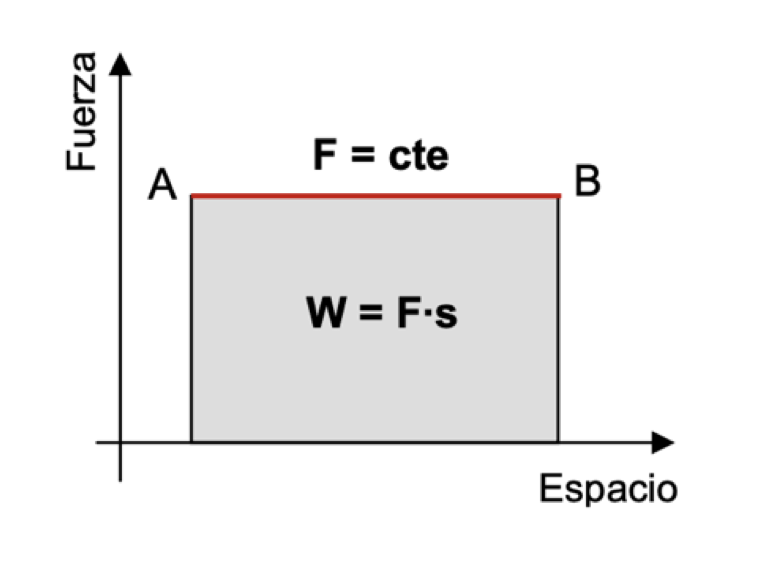
\[W=base\cdot altura=F\cdot s\]
Ejercicio 2: Calcula el trabajo que es necesario realizar para elevar un objeto de 5 kg de masa hasta una altura de 3 m, en los siguientes casos:
- El objeto se eleva tirando de él verticalmente.
- El objeto alcanza dicha altura subiendo por un plano inclinado 37o respecto de la horizontal, en el que no hay rozamiento.
Ejercicio 3: Un hombre debe mover 15 m una caja de 20 kg realizando una fuerza de 40 N. Calcula el trabajo que realiza si:
- Empuja la caja desde atrás.
- Tira de la caja hacia delante.
- Empuja la caja hacia abajo.
- Empuja la caja con un ángulo de 60o sobre la horizontal.
Ejercicio 4: Determina el trabajo realizado por la fuerza F en el gráfico de la siguiente figura:
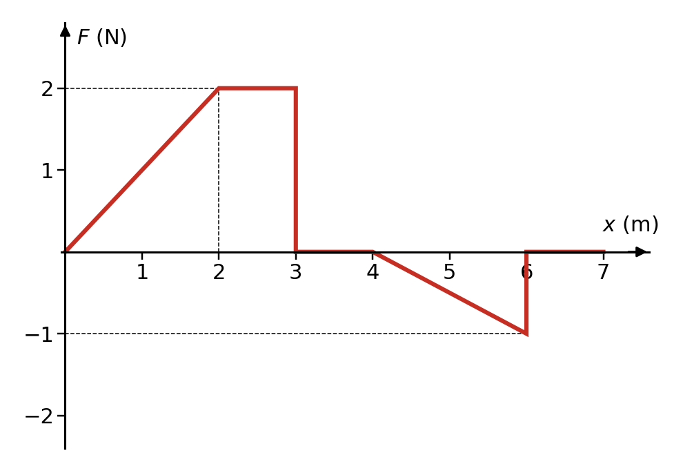
Trabajo de rotación
Consideremos un cuerpo que puede girar alrededor de un eje O al aplicarle una fuerza \(\vec{F}\) sobre un punto A del mismo. Este punto describirá́ una trayectoria circular en torno al eje de giro. Al existir un desplazamiento, se realiza un trabajo denominado trabajo de rotación.
Supongamos un pequeño desplazamiento infinitesimal \(d\vec{s}\) desde el punto A hasta el punto B. Si denominamos dθ al pequeño ángulo girado expresado en radianes y r a la distancia desde el punto A al eje de giro O, tenemos:
\[|d\vec{s}|=ds=r\cdot d\theta \]
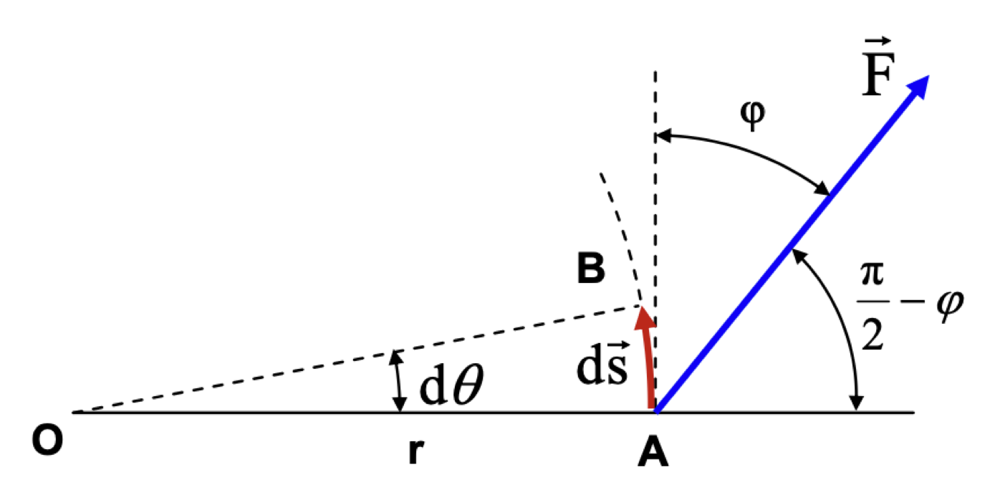
Al ser ds muy pequeño podemos considerarlo prácticamente un vector rectilíneo que forma un ángulo φ con F. Por lo tanto, el trabajo realizado por la fuerza será:
\[dW=\vec{F}\cdot d\vec{s}=|\vec{F}|\cdot |d\vec{s}|\cdot \cos \varphi=F\cdot r\cdot d \theta\cdot \cos \varphi\]
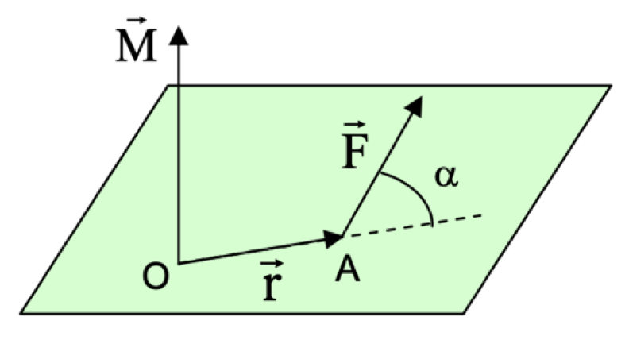
Si tenemos en cuenta la definición de momento de una fuerza con respecto a un punto:
\[\vec{M}= \vec{r}\times \vec{F}\]
El vector momento es un producto vectorial de dos vectores, por lo que:
- Su módulo es \(M=|\vec{M}|=|\vec{F}|\cdot |\vec{r}|\cdot \sin \alpha =F\cdot r\cdot \sin \left ( \frac{\pi }{2}-\varphi \right )\)
- Su dirección es perpendicular al plano formado por los dos vectores \(\vec{F}\) y \(\vec{r}\)
- Su sentido viene dado por la regla de la mano derecha.
Teniendo en cuenta que \(\cos \varphi= \sin \left ( \frac{\pi }{2}-\varphi \right )\), la expresión del trabajo elemental dW quedaría:
\[dW=F\cdot r\cdot d \theta\cdot \cos \varphi =F\cdot r\cdot d \theta\cdot \sin \left ( \frac{\pi }{2}-\varphi \right )=M\cdot d \theta\]
El trabajo total para un giro que vaya desde un ángulo inicial θA hasta un ángulo final θB sería, por tanto:
\[W=\int_{\theta_{A}}^{\theta_{B}}M \cdot d\theta\]
En el caso particular en que el par o momento fuera constante, la expresión del trabajo quedaría:
\[W=M \cdot \theta\]
siendo θ el ángulo total girado por el cuerpo y M el momento de la fuerza aplicada o par de rotación respecto al eje de giro.
Ejercicio 5: El par en la rueda de un automóvil es de 500 Nm. Determina el trabajo realizado para recorrer 1000 m. Toma el diámetro de la rueda como 0,5 m. ¿Cuál es la fuerza aplicada por las ruedas sobre el suelo?
Trabajo de expansión/compresión de un gas en un cilindro
Consideremos un gas en el interior de un cilindro provisto de un émbolo de sección S. Si denominamos por p a la presión del gas, éste ejercerá́ sobre el émbolo una fuerza \(F = p \cdot S\).
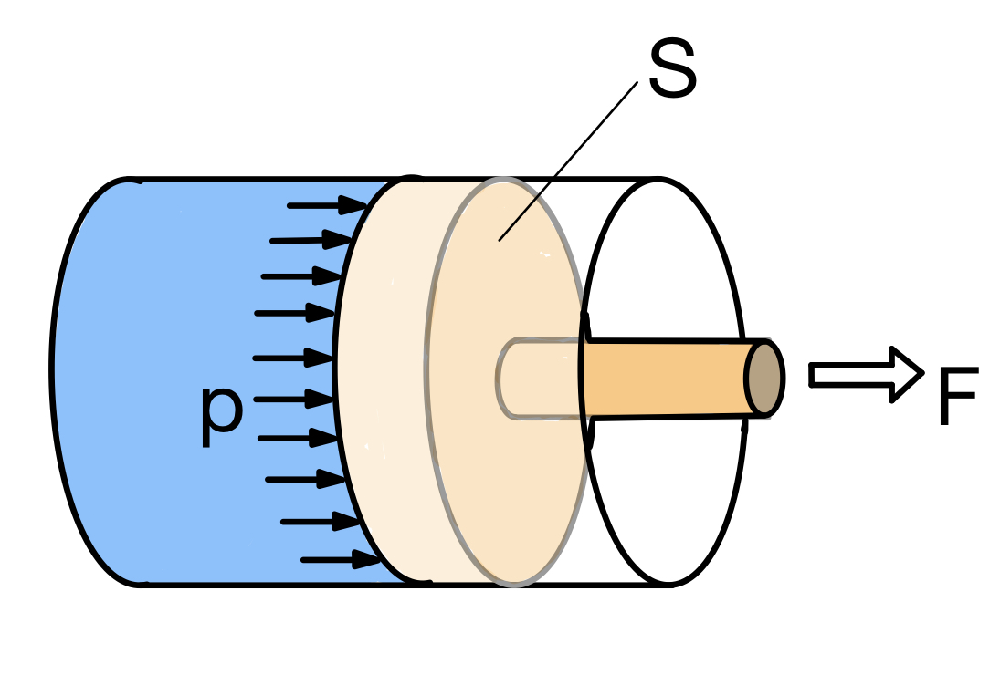
Como consecuencia de la fuerza, el émbolo realizará un desplazamiento desde un punto inicial A hasta otro final B. Como la presión puede ir variando al moverse el émbolo, para poder evaluar el trabajo realizado descompondremos el desplazamiento total en un gran número de pequeños desplazamientos infinitesimales dx. Estos desplazamientos son tan pequeños que, en cada uno de ellos, la presión puede considerarse constante.Por otra parte, un desplazamiento dx del émbolo da lugar a un variación de volumen ocupado por el gas de \(dV = S \cdot dx\) (si VB > VA, se trata de una expansión; si VB < VA, se trata de una compresión).
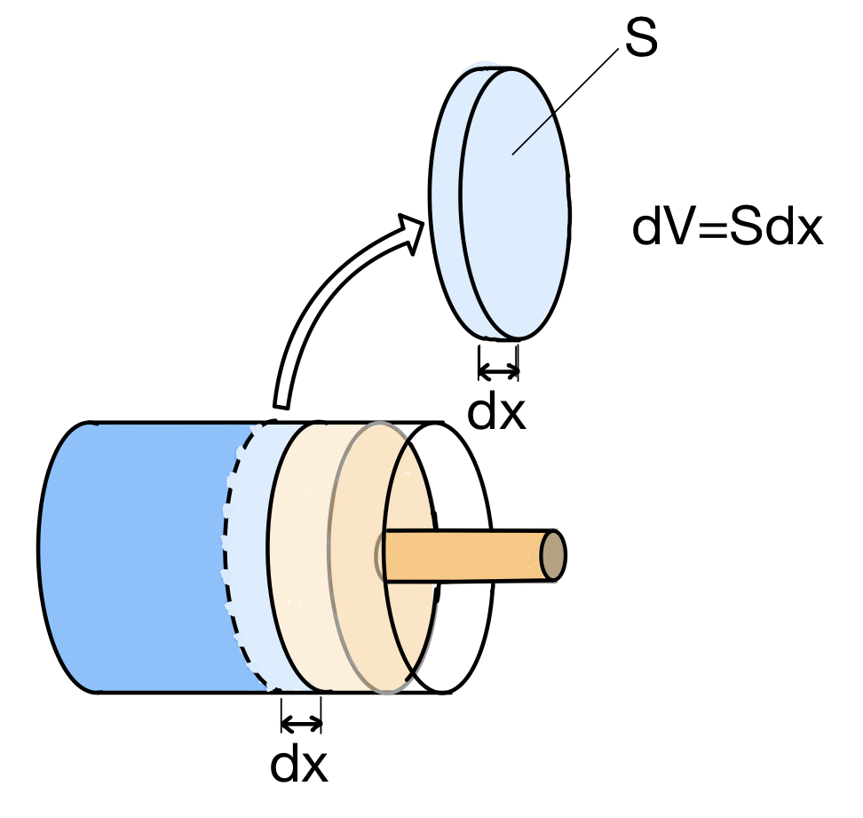
El trabajo realizado en un desplazamiento infinitesimal vendrá dado por:
\[dW=F\cdot dx=p\cdot S\cdot dx=p\cdot dV\]
El trabajo total será la suma (integral) de todos esos trabajos:
\[W=\int_{V_{A}}^{V_{B}}dW=\int_{V_{A}}^{V_{B}}p\cdot dV\]
Si se trata de una expansión (VB > VA) el trabajo será positivo, y cuando se trate de una compresión (VB < VA) el trabajo será negativo.
Representación gráfica del trabajo de expansión/compresión
Podemos visualizar gráficamente el trabajo de expansión si representamos en un diagrama cartesiano la presión en relación con el volumen ocupado. El trabajo sería igual al área de la figura limitada por la curva que representa a la presión, el eje de volumen y las abscisas correspondientes a los volúmenes inicial y final.
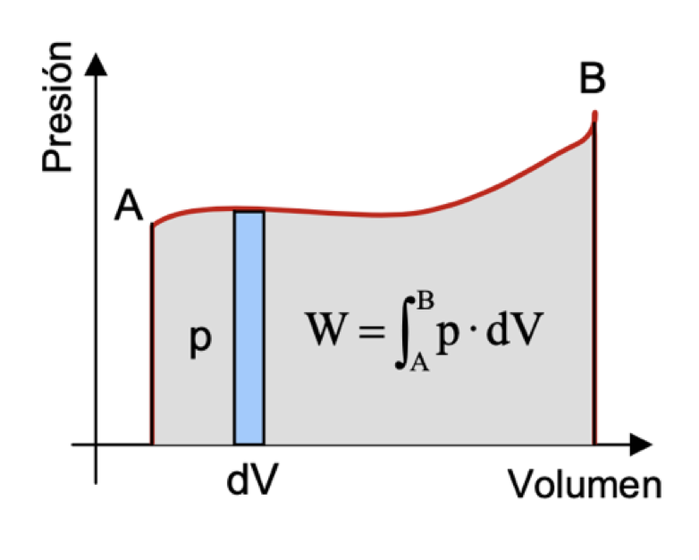
Diferentes tipos de transformaciones sufridas por un gas en un cilindro
Según el tipo de evolución que siga el gas, podemos tener diferentes procesos, para los que se puede obtener una expresión particular del trabajo:
Isobárica (p cte)
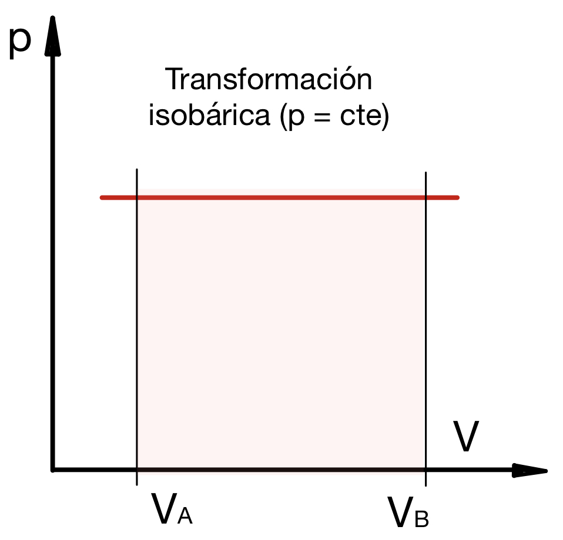
En el caso particular en que la presión se mantenga constante durante todo el proceso de expansión, la p puede salir de la integral (sería como sacar factor común de la suma) y la expresión del trabajo se convierte en:
\[W=p\int_{V_{A}}^{V_{B}} dV=p\cdot (V_{B}-V_{A}) = p\cdot \Delta V\]
\[W=p\cdot \Delta V\]
siendo ∆V = VB −VA el aumento (si es positivo) o la disminución (si es negativo) de volumen del gas en todo el proceso.
Isotérmica (T cte)
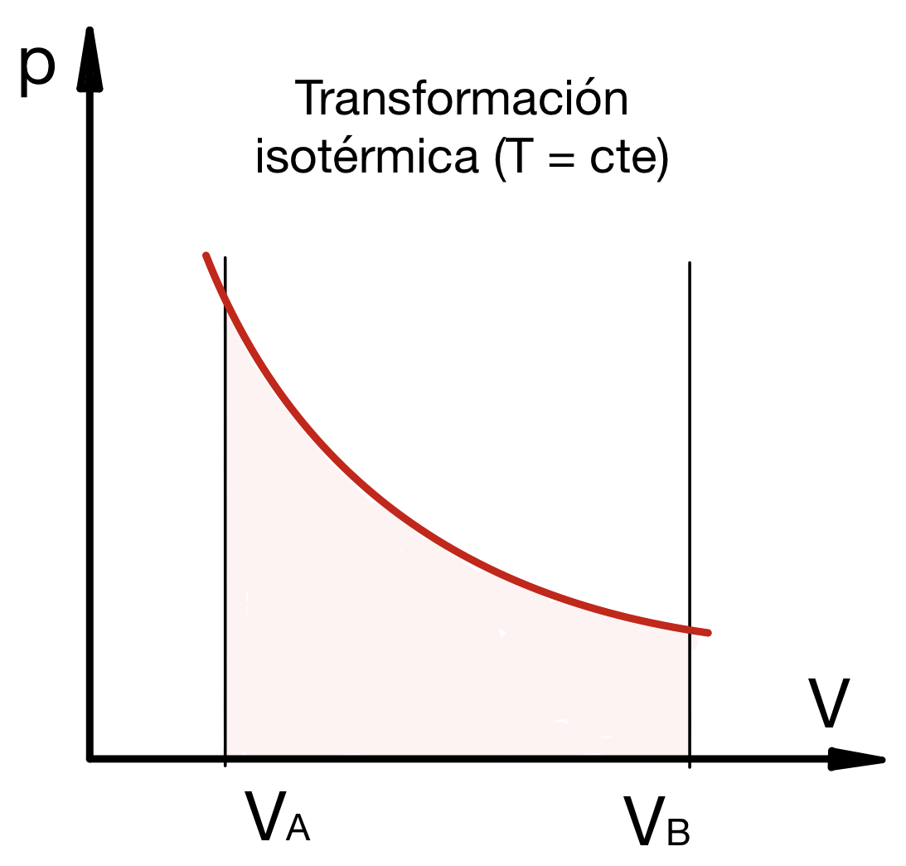
En esta transformación la temperatura es constante. Ahora no podemos sacar la p de la integral por lo que, para intentar calcular la integral del trabajo, tendríamos que saber cómo varía la presión del gas con el volumen (porque la integral es en volumen, al llevar dV). Podemos suponer que el gas se comporta como un gas ideal y, por lo tanto, cumple la ecuación de los gases perfectos:
\[p\cdot V=n\cdot R\cdot T \quad \text{donde} \left\{\begin{array}{l}n: \text{número de moles} \\ R: \text{0,082}\ \frac{\text{atm}\cdot\text{l}}{\text{K}\cdot\text{mol}}\\R: \text{8,314}\ \frac{\text{J}}{\text{K}\cdot\text{mol}}\end{array}\right.\]
En ese caso, sustituyendo el valor de p en la expresión del trabajo y teniendo en cuenta que, en una expansión isotérmica, T permanece constante (puede salir de la integral), la expresión del trabajo quedará:
\[W=\int_{V_{A}}^{V_{B}}p \cdot dV=\int_{V_{A}}^{V_{B}}\frac{n \cdot R\cdot T}{V} \cdot dV=n \cdot R\cdot T\int_{V_{A}}^{V_{B}} \frac{dV}{V}\]
Calculando la integral y evaluándola entre VA y VB obtenemos la expresión del trabajo realizado en una transformación isotérmica:
\[W=n \cdot R\cdot T \cdot ln\left ( \frac{V_{B}}{V_{A}} \right )\]
Además, en el caso de una transformación isotérmica se cumple que el producto p·V es constante, por lo que podemos decir que:
\[ \frac{V_{B}}{V_{A}} =\frac{p_{A}}{p_{B}}\]
Por tanto, el trabajo en una transformación isotérmica también podemos calcularlo con esta otra expresión:
\[W=n \cdot R\cdot T \cdot ln\left ( \frac{p_{A}}{p_{B}} \right )\]
Isócora (V cte)
En este caso, al no haber variación de volumen, tenemos que dV = 0. Por lo tanto, el trabajo es nulo.
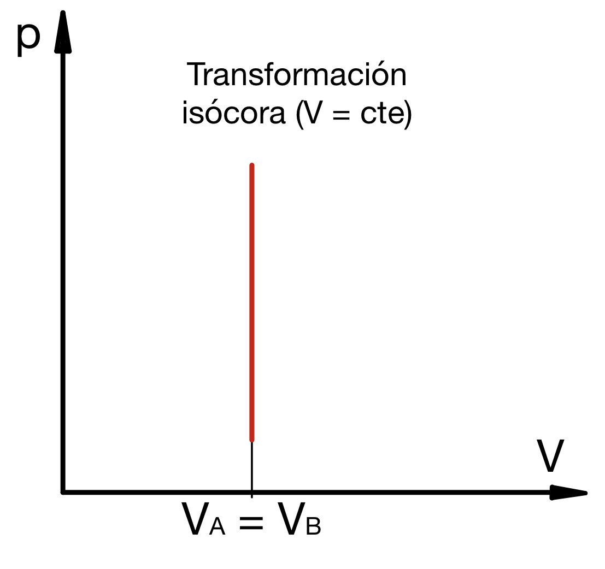
En una transformación isócora no se realiza ningún trabajo.
\[W=0\]
Adiabática (Q = 0)
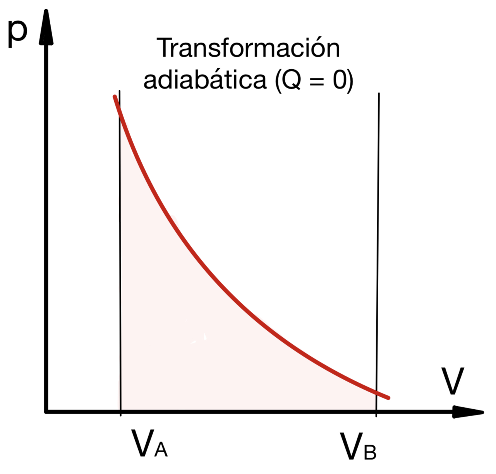
En estos casos, el sistema está lo suficientemente aislado del exterior como para que no fluya calor, o la transformación es tan rápida que, en el breve tiempo que dura el proceso, se puede establecer que no hay transferencia de calor con el exterior. Esto es lo que se suele considerar al estudiar los motores térmicos cuando se quema el combustible.
La ecuación de estado que rige este proceso es:
\[p\cdot V^{\gamma}=constante\]
donde γ (gamma) es el coeficiente adiabático que coincide con el cociente entre los calores específicos del gas a presión constante (cp) y a volumen constante (cv). Para el caso del aire, γ = 1,4.
Si representamos esa ecuación en el diagrama p-V obtenemos una gráfica como la que tienes a la derecha. Es parecida a la gráfica de la isotérmica, pero la transformación adiabática tiene una pendiente mayor que la isotérmica en el diagrama p-V.
El trabajo en este tipo de transformaciones puede calcularse como:
\[W=\frac{p_{A}V_{A}-p_{B}V_{B}}{\gamma -1}\]
Politrópica (genérica)
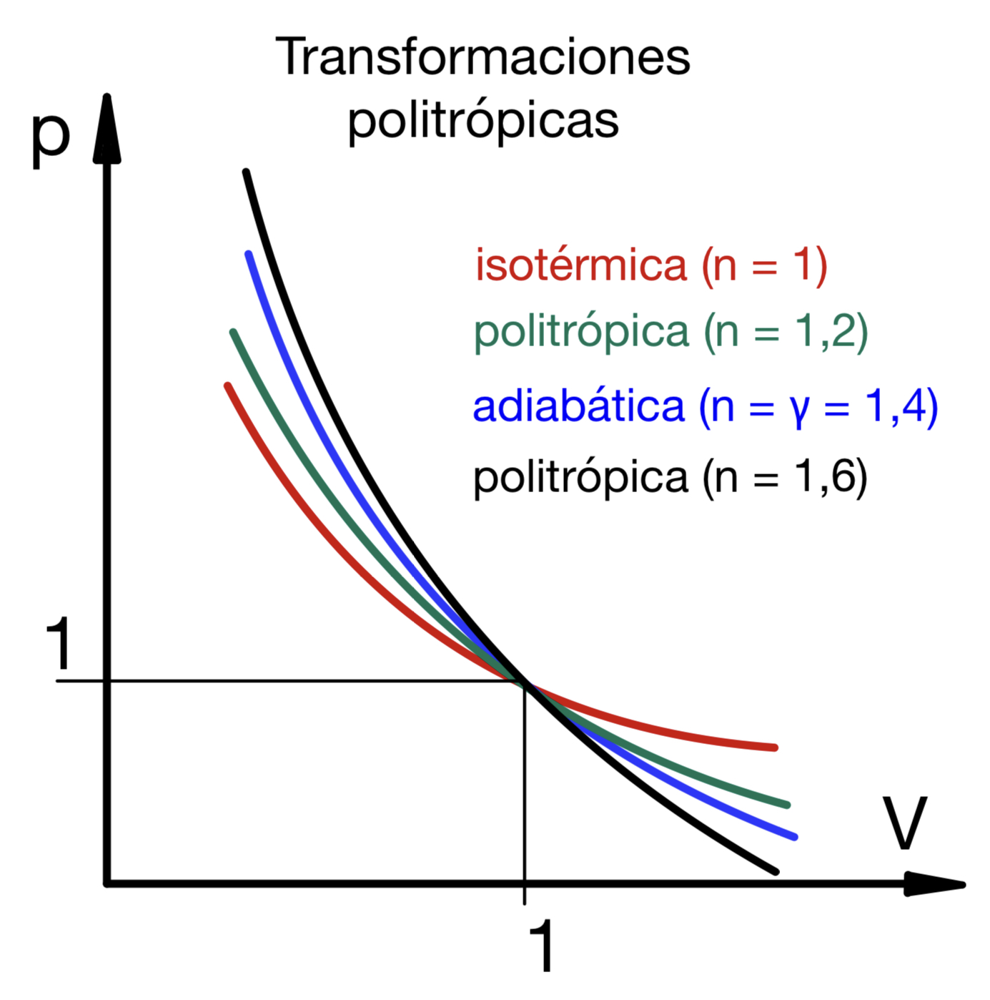
Si consideramos las ecuaciones de la isotérmica y de la adiabática:
isotérmica: \(p_{A}V_{A}=p_{B}V_{B}\)
adiabática: \(p_{A}V_{A }^{\gamma}=p_{B}V_{B}^{\gamma}\)
Observamos que son en todo semejantes excepto en que la primera tiene exponente 1 en el volumen y la segunda exponente γ. Por ello, para adaptarse más a un proceso real se utiliza la expresión:
\[p_{A}V_{A }^{n}=p_{B}V_{B}^{n}\]
que se denomina ecuación del proceso politrópico, y donde n es el exponente politrópico, el cual se puede ajustar a la forma de evolución del gas (que puede no ser exactamente ninguna de las vistas anteriormente).
Las transformaciones que hemos visto anteriormente serían casos particulares de la transformación politrópica para diferentes valores del exponente:
- Cuando n= 0, el proceso es isobárico.
- Cuando n = 1, el proceso es isotérmico.
- Cuando n = ±∞, el proceso es isócoro.
- Cuando n = γ, el proceso es adiabático.
Por lo demás, la expresión del trabajo es idéntica al caso anterior pero con n.
\[W=\frac{p_{A}V_{A}-p_{B}V_{B}}{n -1}\]
Ejercicio 6: Un cilindro neumático posee un diámetro de 20 mm y una carrera de 100 mm. Se alimenta con una presión de 6 kp/cm2. Suponiendo que realiza la fuerza máxima para la que está diseñado, determina el trabajo desarrollado en una salida del vástago. Expresa el resultado en julios.
Ejercicio 7: Un cilindro de 25 mm de diámetro es alimentado a una presión de 10 kp/cm2. Al salir el vástago realiza un trabajo de 20 julios. Determina la carrera de dicho cilindro.
Ejercicio 8: Una cantidad de 0,50 moles de un gas que se comporta como ideal se expande isotérmicamente y en forma reversible desde un volumen de 2 l hasta tres veces ese volumen a 32°C. ¿Cuál será el trabajo realizado?
Ejercicio 9: Se tiene un gas que ocupa un volumen de 2 l a una presión de 12 atmósferas y temperatura de 25 °C. El gas se expande isotérmicamente hasta alcanzar un volumen de 8 l. Determina el trabajo realizado por el gas en su expansión.
Ejercicio 10: Dos litros de nitrógeno a 0 °C y 5 atmósferas de presión se expanden isotérmicamente, hasta alcanzar una presión de 1 atm. Suponiendo que el gas es ideal, determina el trabajo realizado.
Ejercicio 11: Un mol de gas ideal sufre una expansión reversible e isotérmica desde un volumen inicial V1 hasta un volumen final 10·V1. Durante dicho proceso el gas realiza 1 000 calorías de trabajo. Si la presión inicial era 100 atm, calcula el valor de V1.
Trabajo realizado por la corriente eléctrica
Recordemos dos conceptos importantes como son la intensidad y la diferencia de potencial (tensión o voltaje).
Se define la intensidad de una corriente eléctrica como la cantidad de carga eléctrica (q) que circula por un conductor en la unidad de tiempo (t):
\[I=\frac{q}{t}\]
Cuando la carga se mide en culombios (C) y el tiempo en segundos (s), la intensidad se mide en amperios (A), que es la unidad de intensidad de corriente eléctrica en el Sistema Internacional.
La diferencia de potencial se define como el trabajo necesario (W) para mover la unidad de carga eléctrica (q) entre dos puntos de un campo eléctrico:
\[V=\frac{W}{q}\]
La unidad de medida en el SI es el voltio (V), que equivale a un julio/culombio.
Dicho de otra forma, cuando una carga q se mueve entre dos puntos de un campo eléctrico que están a diferente potencial se realiza un trabajo, cuya expresión es:
\[W=V \cdot q\]
Con lo que el trabajo se convierte en:
\[W=V \cdot I \cdot t\]
Clasifica
Clasifica cada descripción en la transformación a la que corresponde. Fíjate en la forma de la gráfica p-V, en la expresión del trabajo y en el exponente politrópico n.
Test
Decide el signo del trabajo en cada situación. Usa la realimentación para revisar el criterio.